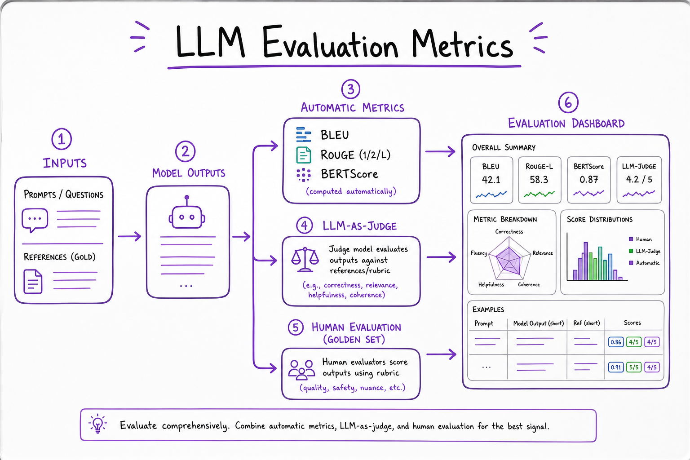
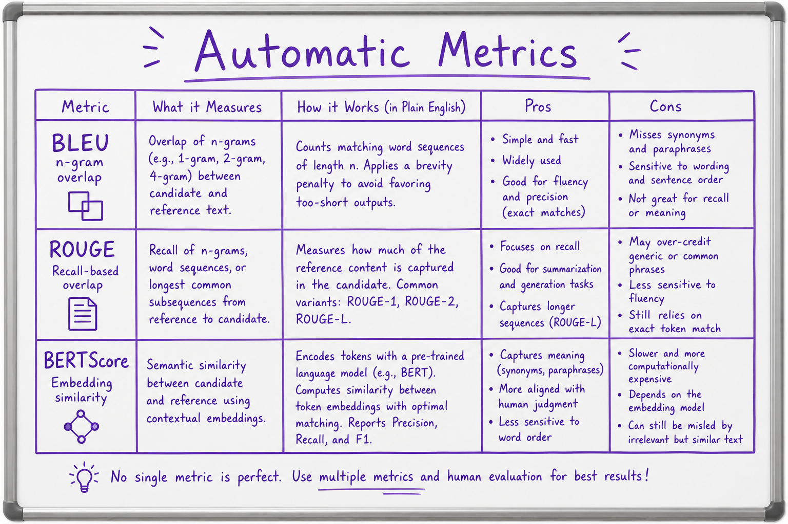
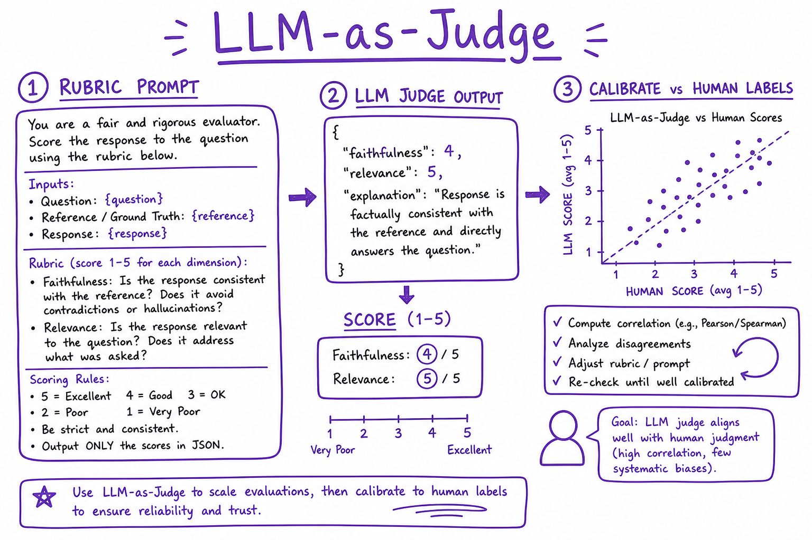

Evaluation Metrics // Fundamentals
Measure whether LLM outputs are good: automatic n-gram and embedding metrics for regression, LLM-as-judge for nuance, human golden sets for launch gates. Bad evals ship hallucinations to production.

Model outputs flow through automatic metrics, judge models, and human review before release.
01 — What & Why
Generative outputs need task-specific evaluation. Perplexity measures modeling; chat quality needs correctness, faithfulness, helpfulness, and safety dimensions.
01a — Core Concepts
| Metric | Measures | Limitation |
|---|---|---|
| BLEU/ROUGE | n-gram overlap to reference | Penalizes valid paraphrases |
| BERTScore | Embedding similarity | Correlates better, still not faithfulness |
| Exact match / F1 | QA span match | Needs gold answers |
| LLM-as-judge | Rubric score 1–5 | Bias toward judge model vendor |
| Human eval | Gold standard | Slow, expensive |
01b — API Surface
from ragas import evaluate
from ragas.metrics import faithfulness, answer_relevancy
from datasets import Dataset
ds = Dataset.from_dict({"question": [...], "answer": [...], "contexts": [...]})
result = evaluate(ds, metrics=[faithfulness, answer_relevancy])02 — When to Use
| Need | Metric |
|---|---|
| CI regression on summarization | ROUGE-L + spot human |
| RAG faithfulness | RAGAS faithfulness, citation check |
| Open-ended quality | LLM judge + human sample |
03 — Architecture
Prompt set (golden) ──► Run candidate model ──► Outputs
├── Automatic metrics (batch)
├── LLM judge (rubric)
└── Human review (sample) ──► Pass/fail gate04 — Automatic Metrics
Use for regression detection, not absolute quality. Pair with delta thresholds vs baseline model.
05 — LLM-as-Judge
JUDGE_PROMPT = '''Score faithfulness 1-5.
Context: {context}
Answer: {answer}
Return JSON: {"score": int, "reason": str}'''Calibrate judge against 50–100 human-labeled examples before trusting scores.
06 — Human Eval
Inter-annotator agreement (Cohen's kappa); blind A/B between model versions; stratify by language and domain.
07 — RAG Metrics
Faithfulness: answer supported by context. Answer relevancy: addresses question. Context precision/recall for retrieval quality.
08 — Regression Suites
Version prompts + model + retrieval together. Block deploy if faithfulness drops >2% on golden set.

BLEU, ROUGE, BERTScore tradeoffs.

Rubric-based scoring with calibration.
09 — Production & Ops
- Nightly eval job on staging model
- Store traces with Langfuse for failure analysis
- Track metric drift week over week
10 — Where It Shows Up
AI vertical
11 — Common Pitfalls
- Optimizing BLEU alone
- Judge same model as candidate
- Leaky golden set in training
- No stratified slices (language, domain)